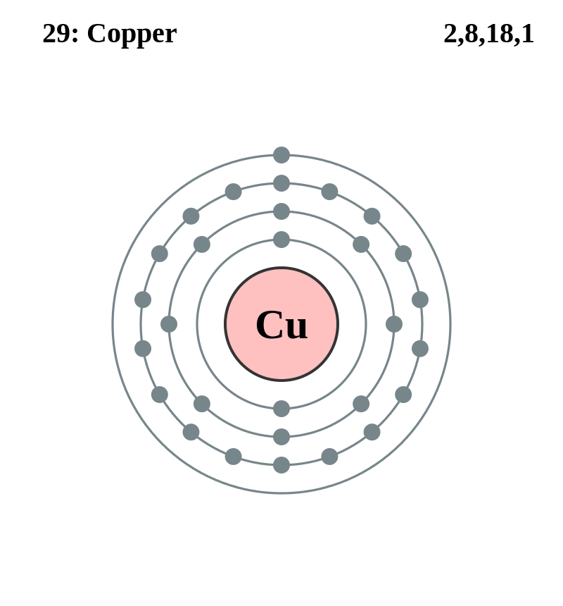

Basic Information about the element
Basic Information about the element
Name: Copper
Symbol: Cu
Atomic Number: 29

1s2 2s2 2p6 3s2 3p6 3d10 4s1
The chemical element copper is classed as a transition metal.
It has been known since ancient times. Its discoverer and discovery date are unknown.
| Number of Protons/Electrons: | 29 |
| Number of Neutrons: | 35 |
| Atomic Mass: | 63.546 amu |
| Melting Point: | 1083.0 °C (1356.15 K, 1981.4 °F) |
| Boiling Point: | 2567.0 °C (2840.15 K, 4652.6 °F) |
| Classification: | Transition metal |
| Uses: | electrical conductor, jewelry, coins, plumbing |